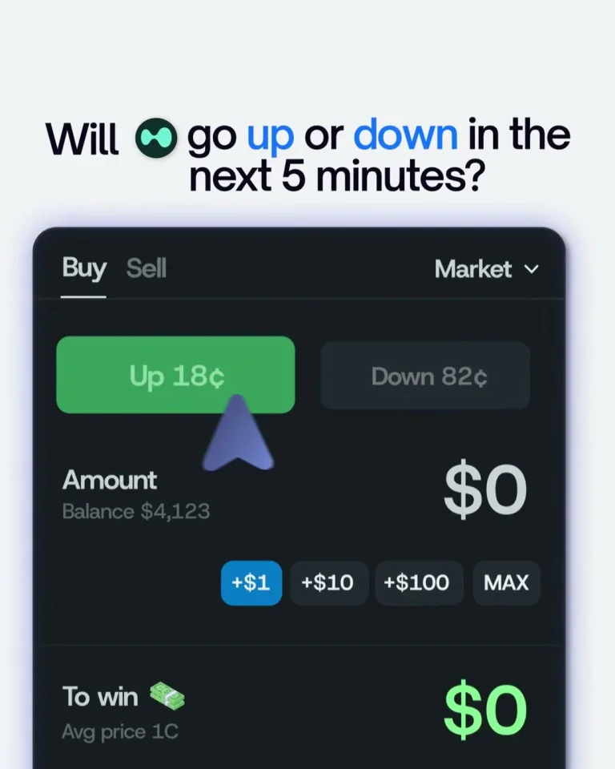
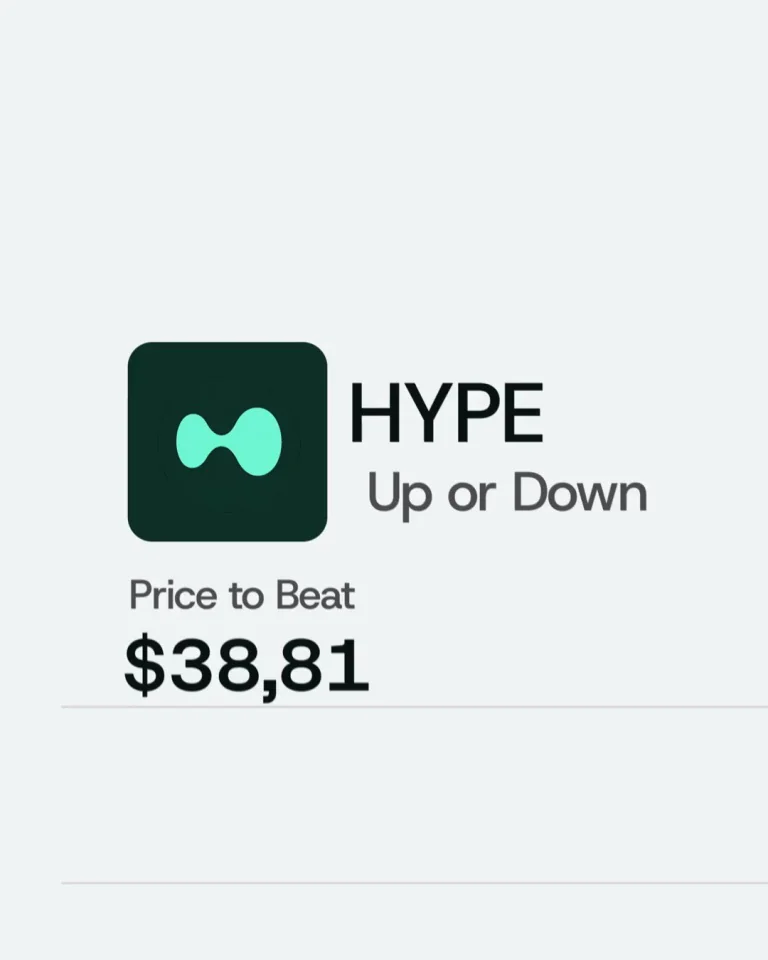
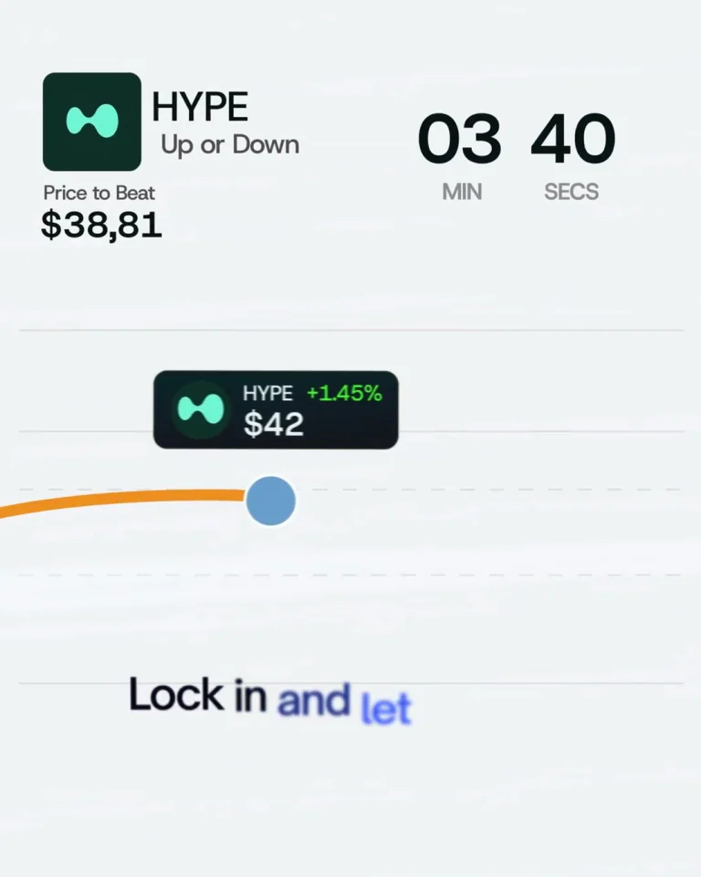

Polymarket / V068
Hyperliquid 5-minute up/down HYPE polymarkets —…
把操作、等待和完成拆成三种明确状态。倒计时负责压缩等待，但开始与结束必须有清楚的触发。
构图与编排 可播放 · 可替换内容
整体编排规则示例
查看 HTML 源码
<!doctype html><html lang="zh-CN"><meta charset="utf-8"><meta name="viewport" content="width=device-width,initial-scale=1"><title>Hyperliquid 5-minute up/down HYPE polymarkets —… · sequence</title><style>html,body{margin:0;width:100%;height:100%;overflow:hidden;background:#f4f7f3}canvas{display:block;width:100%;height:100%;object-fit:contain}</style><body data-mode="sequence"><canvas width="1000" height="600"></canvas><script src="data.js"></script><script src="common.js"></script><script src="scene.js"></script><script src="bridge.js"></script></body></html>画面元素问题标题涨跌按钮金额价格线倒计时领取按钮结果数字
MOTION LANGUAGE
动作与构图
局部动作 · 构图规则
01
先完成方向与金额
涨跌问题出现在表单之前，方向选项在同一行，金额置于其下。选中方向后填写金额，按钮确认再切入等待。
白底教学段与深色操作区交替，绿色突出选中与完成，蓝色负责品牌收尾。数字采用对齐字形，标题保持简短无衬线。
02
压缩时间，也保留时间逻辑
压缩时间，也保留时间逻辑规则示例
查看 HTML 源码
<!doctype html><html lang="zh-CN"><meta charset="utf-8"><meta name="viewport" content="width=device-width,initial-scale=1"><title>Hyperliquid 5-minute up/down HYPE polymarkets —… · sequence</title><style>html,body{margin:0;width:100%;height:100%;overflow:hidden;background:#f4f7f3}canvas{display:block;width:100%;height:100%;object-fit:contain}</style><body data-mode="clip" data-start="9" data-end="16"><canvas width="1000" height="600"></canvas><script src="data.js"></script><script src="common.js"></script><script src="scene.js"></script><script src="bridge.js"></script></body></html>倒计时从确认之后开始，跳过中间等待时保持单调递减，并用明确的节奏让人知道时间被压缩。到零之后再显示领取或完成动作，不让结果与等待同时出现。
03
结果之后再放行动入口
领取反馈使用清楚的文字和单一状态符号，随后出现下一次行动与品牌。收益数字需要与实际条件绑定。
可以迁移到任务竞赛、倒计时预约或进度完成，保留操作完成、等待开始、完成解锁三道边界。
SEQUENCE
段落与节奏
点击段落，定位到上方编排示意。



画面参考 · 离散静帧
KEEP THE RELATIONSHIPS
制作其他主题
- 保留操作时间→等待时间→完成反馈三种时段
- 可以换成任务竞赛或进度演示，倒计时压缩要明确
制作约束
问题标题 / 涨跌按钮 / 金额 / 价格线 / 倒计时 / 领取按钮 / 结果数字
- 表单选择后倒计时压缩跳变，到零后才出现领取
- 绿色曲线和收益字同步扩张，是状态强调而非真实数据测量
- 白底教学、深色操作、品牌色收尾三段分工明确